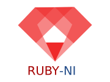
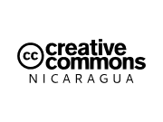
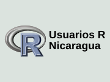

Software Libre
«Software libre» es el software que respeta la libertad de los usuarios y la comunidad.
Software Libre son programas y tecnologías que garantizan, mediante una licencia, a cualquier persona o institución las libertades para ejecutar, copiar, distribuir, estudiar, cambiar y mejorar el software.
En Nicaragua existen varios grupos (comunidades) de Software Libre compuestos por usuarios, desarrolladores y activistas del Software Libre. Las comunidades organizan actividades y eventos para promover el uso y desarrollo de tecnologías libres y abiertas en Nicaragua, damos soporte en los canales de comunicación y contribuimos activamente con código y traducciones en distintos proyectos.
Toda persona es bienvenida a suscribirse a la lista de correos general de las comunidades nacionales: «Comunidad de Software Libre en Nicaragua» (GUL-NIC).
Comunidades

-

-

-

Eventos
Las comunidades de Software Libre en Nicaragua han organizado más de 200 eventos nacionales e internacionales desde el 2007.
Cada comunidad desarrolla sus propios eventos y actividades, tales como fiestas de lanzamiento, eventos de traducción y desarrollo, o reuniones informales con el propósito de conocerse y hablar sobre temas de interés común.
Algunas de estas comunidades también organizan grandes eventos internacionales en nuestro país, con el objetivo de fortalecer los lazos entre la comunidad local y la comunidad global. Ejemplo de esto último es la Conferencia de Desarrolladores de Debian (DebConf), el DrupalCamp o el WordCamp.
A nivel general, se organizan eventos con la participación de toda la comunidad, como el Festival Nacional de Software Libre, la versión internacional que es el FLISOL, o a nivel centroamericano, el Encuentro Centroamericano de Software Libre.
Los eventos generales de las comunidades de Linux se llevan a cabo bajo la marca Linux Tour. Puedes consultar el sitio web o suscribirte a la lista de correos de Eventos para estar al tanto de los últimos eventos que se celebran en nuestro país.
Acerca de
Un poco de historia...
Los orígenes de las comunidades de Software Libre en Nicaragua se remontan a finales de años noventa, con la creación de NicaLUG, el primer grupo de usuarios GNU/Linux de nuestro país, que nació como iniciativa de algunas personas que frecuentaban las salas de chat IRC en ese entonces.
Luego de la Cumbre Mundial sobre la Sociedad de la Información del 2005 en Túnez, surgió en el 2006 la Red de Software Libre y Código Abierto de Nicaragua (RSLCAN), una iniciativa para promover públicamente tecnologías libres y abiertas en todos los ámbitos de nuestra sociedad.
El 2007 fue un año de renacimiento para una segunda generación de linuxeros, con la fundación de varios grupos aglutinados bajo una misma bandera; el Grupo de Usuarios GNU/Linux en Nicaragua (GUL-NIC).
Para el 2009, con la consolidación de las comunidades de Software Libre en nuestro país y la incorporación de nuevas comunidades, de Software Libre, pero no necesariamente de GNU/Linux, se decidió cambiar el nombre a Comunidad de Software Libre de Nicaragua, conservando las siglas GUL-NIC como un homenaje a nuestras raíces.
Apoyo a las comunidades de Software Libre y promover su desarrollo y crecimiento.
Dentro de GUL-NIC contamos con una serie de recursos para apoyar a las comunidades de Software Libre de nuestro país. Si tu comunidad necesita fortalecer su presencia en línea, podemos apoyarte con la creación de listas de correo, o espacio de alojamiento para que puedas montar tu sitio web o wiki.
Contáctanos por medio de la lista de correos pública de Comunidades para ver como podemos ayudarte.
¡Gracias!
Este sitio web fue desarrollado con todo el ♥ del mundo por la Comunidad de Software Libre de Nicaragua.
Agradecemos a todas las personas que metieron manos para que este sitio exista. Usted puede ver información sobre los autores y obtener el código fuente de este sitio web de su repositorio en linea. Por supuesto está invitado a mejorar el sitio por este medio.
Muchas gracias por el gentil apoyo del nic.ni quien nos facilitó el dominio softwarelibre.org.ni y el Instituto de Informática y Comercio (ISIC) por el alojamiento.
Todo el contenido de este sitio está liberado bajo una licencia Creative Commons CC-BY 3.0 Unported. Algunas marcas y logotipos pueden estar protegidas por leyes internacionales, y son marca registradas propiedad de sus respectivos dueños.
Última actualización: Diciembre 2012.